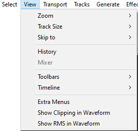
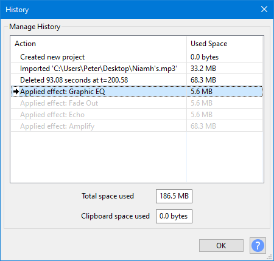
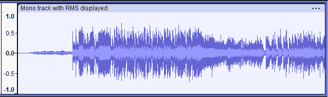

View Menu
- 
- These views can be changed individually for each track using the Audio Track Dropdown Menu.
- Also you can change the default View Mode for all tracks in Tracks Preferences.
Zoom
The Zoom submenu has commands that enable you to control the amount of audio, longer or shorter periods of time, that is visible on your screen.
Track Size
The Track Size submenu contains commands that help you to fit your project to the screen horizontally and vertically.
Skip To
The Skip to submenu has commands that enable you to readily skip the cursor position to the beginning or end of your current selection.
History
Brings up the History window which can then be left open while using Audacity normally.
- History lists all undoable actions performed in the current project, including importing.
- The right-hand column shows the amount of hard disk space each operation used.
- The total space used is shown in the first (uneditable) box beneath the list.
- 
Select an item in the History list, and click the button, to Undo or Redo immediately to that action.
It is the same as choosing or multiple times, but much quicker.
See History - Undo and Redo for details on using the Undo History window.
Mixer
Mixer is an alternative view to the audio tracks in the main tracks window, and is analogous to a hardware mixer board. Each audio track is displayed in a Track Strip. Each Track Strip has its own pair of meters, Gain/Volume slider, Pan slider, and Mute/Solo buttons, echoing that track's controls in its Track Control Panel. The Mixer command is enabled whenever there's an audio track - it can even be brought up during playback.
For more details see the Mixer page.
Toolbars
Toolbars provide quick access to many functions in Audacity. In some cases the functions provided by a toolbar are available only through that toolbar.
All toolbars are enabled by default except: Device Toolbar, Cut/Copy/Paste Toolbar and the Spectral Selection Toolbar.
| If your desired toolbar is not visible, choose and click to put a checkmark by the toolbar you wish to enable. |
Timeline
Enables you to change the Timeline display mode between Minutes and Seconds (default setting) and Beats and Measures.
Extra Menus
Shows the Extra menu with many extra less frequently used commands. This menu appears just before the Help menu.
Show Clipping in Waveform
Click this menu item to turn display of clipped samples on and off - a check mark in the item indicates that display is turned on. If turned on (the default is off), individual or multiple clipped samples display as a red vertical line when in one of the waveform views. A sample is displayed as clipped if it touches or exceeds 0 dB and so touches or exceeds the volume envelope defined by +1.0 to - 1.0 on the vertical scale to left of the waveform.
A run of four or more consecutive clipped samples will also trigger the red clipping indicator in Meter Toolbar. A solid block of red in the waveform will almost certainly indicate multiple or extended runs of lost audio information above 0 dB, resulting in severe distortion. Avoid clipped samples where possible, for example by setting the recording level correctly. You may turn "Show Clipping in Waveform" off if it behaves sluggishly on slower machines.

- Clipping shown as red lines on the waveform
| By choosing , clipping can also be shown diagrammatically in a Label Track so that screen-readers can access the information. |
Show RMS in Waveform
Click this menu item to turn on (or back off) the display of the RMS in the waveform. Default setting is "off".
- 
- Waveform with RMS display turned on
Enter / Exit Full Screen (Mac only)
Enter Full Screen enters full screen state, occupying the entire display and hiding the Audacity menu bar and window buttons and the Dock. This is the same as clicking the green window button top left of the Audacity title bar. To leave Full Screen, hover your mouse at the top of the monitor to show the menu bar and window buttons then access View > Exit Full Screen or click the green window button.
The Mac keyboard shortcut Ctrl + ⌘ + F to toggle full screen does not work in Audacity and so does not appear alongside the Enter / Exit Full Screen menu items. Separate "App Shortcuts" for "Enter Full Screen" and "Exit Full Screen" can be added for Audacity in the Mac Keyboard Preferences, but it is probably easier to use Audacity's own shortcut COMMAND + / for "Full screen on/off" which performs the same full screen function.
| "Full screen on/off" is not interchangeable with the menu item or full screen button. Thus the Audacity shortcut cannot exit full screen entered by other methods, and the other methods cannot exit full screen entered by using the Audacity shortcut. |